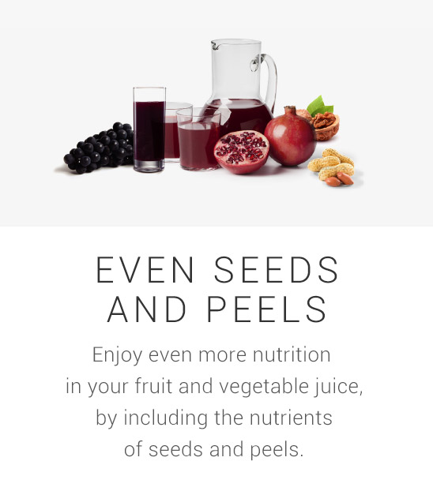

THE KEY TO GOOD HEALTH LIES IN NATURE
Nature's abundance provides us the best nutrition there is, but the trick is to know how to unlock all that abundant nutrition and make it part of our daily lives.
01 OUR EATING HABITS ARETHE ROOT OF SO MANY ILLS
Even with great progress in technology and healthcare, we still suffer from disease and illness.
- Global Leading Causes of Death
- *WHO, Global Status Report 2010
- 2014
- Incidence Rate : 14 million, Death Rate : 8.2 million
- 2030
- Incidence Rate : 22 million, Death Rate : 13 million
Cancer death rate (60% increased by 2030)
- Main causes of cancer, *IARC, World Cancer Report 2003
- Food = 30%
BAD EATING HABITS, TOO LITTLE EXERCISE, TOO MUCH STRESS
THEY ALL CONTRIBUTE TO OBESITY, WHICH THEN CAUSES DISEASE AND ILLNESS
- INSTANT FAST FOOD
- LACK OF EXERCISE
- STRESS
- OBESITY
The biggest cause of obesity is practicing the wrong eating habits.Thankfully, nature can help.
02 FRUITS AND VEGETABLES TO THE RESCUE!
THE ROAD TO BETTER HEALTH
Fruits and vegetables are not only abundant in vitamins, minerals, and dietary fiber, but phytochemicals and enzymes as well. According to a 13-year study by University College London, 60,000 people were monitored, and a surprising result was announced: If you eat a daily average of more than seven plates of fruits and vegetables, you could drastically reduce the risk of all-cause mortality. But consuming a sufficient amount of fruits and vegetables is not easy.
- IF YOU CONSUME MORE THAN 7 PLATES OF FRUITS AND VEGETABLES DAILY * SOURCE: UCL REPORT
- EARLY DEATH RATE 42% REDUCTION
- CANCER DEATH RATE 25% REDUCTION
- CARDIOVASCULAR DISEASE DEATH RATE 31% REDUCTION
- UK University of OxfordDaily intake of 150g of fruits reduce cardiovascular disease by 40%
- CANADA National Cancer Institute of CanadaIntake of fruits and vegetables reduce the risk of cancer
03 A WORLDWIDE MOVEMENT
TO EAT MORE FRUITS AND VEGETABLES
Many nations have campaigns to promote fruits and vegetables as part of a healthy diet.

The world continually strives towards a healthier life based on well-directed dietary habits and balanced nutrition.
North Karēlia ProjectFinland implemented the North Karēlia project in 1972 as a national pilot and demonstration program; subsequently,cardiovascular mortality decreased 80%.
| Diseases cause death | Cardiovascular disease | Coronary disease | Cancer | |
|---|---|---|---|---|
| 2006 | 1,328 | 680 | 489 | 262 |
| 1969~1971 | 583 | 172 | 104 | 124 |
| per(%) | -56% | -79% | -79% | -53% |
- Republic of Korea : Family Health 3653 times a day – 6 different kinds of fruits and vegetables, with 5 different colors
- USA : Strive for 5 cups5 to 9 servings of fruits and vegetables a day.
- Canada : Fruits and Vegitables - Mix it up!3 times a day – 6 different kinds of fruits and vegetables, with 5 different colors
- Australia : 2 - 5 servings of fruits and vegetables a dayGo for 2 & 5 encourages adults to eat at least two servings of fruit and five servings of vegetables a day.
04 WHY FRUITS AND VEGETABLES?
Fruits and vegetables are abundant with natural substances that are good for us, such as vitamins, minerals, fiber, phytonutrients and enzymes.
- PHYTONUTRIENTS
- MINERALS
- VITAMINS
- ENZYMES
- FIBER
05 FRUITS AND VEGETABLES ARE RICH IN PHYTONUTRIENTS
PHYTONUTRIENTS ARE PLANT NUTRIENTS FOUND ONLY IN FRUITS AND VEGETABLES.
Similar to the white blood cells we find in the human body, phytonutrients are substances that help plants defend themselves from external dangers, such as insects and microbes. These substances are have powerful antioxidant effects such as anti-aging, skin care, promoting immunity, and much more.
Phytonutrients can have different effects depending on the particular color of the fruit or vegetable. Thus, eating a variety of colors, without heating or cooking the fruit or vegetables, is essential for a balanced nutrient intake conducive to good health.
- PURPLE, Anthocyanin(Grapes) healthy eyes, cardiovascular health
- YELLOW, beta-Carotene(Orange) healthy skin, strengthen immune system
- WHITE, Allicin(Cabbage) detoxification heallthy bones
- RED, Lycopene(Tomatoes) anti-cancer properties, cardiovascular health
- GREEN, Lutein(Kale & Celery) healthy blood, anti-fatigue
DO YOU TAKE VITAMINS?
As people tend to lead busy lives, they try and take the “fast and easy road” in taking care of their health. This includes artificial nutrition in the form of vitamin supplements.
Currently there is controversy surrounding vitamins, and some studies state taking vitamin supplements could actually increase mortality.
* Bjelakovic G, Nikolova D, Gluud L, Simonetti R, Gluud C. Mortality in Randomized Trials of Antioxidant Supplements for Primary and Secondary Prevention. JAMA. 2007
06 ALL ABOUT ENZYMES
Enzymes are essential nutrients that help almost all the reactions that occur in our bodies. Even speaking and thinking need the help of enzymes!
Enzymes are essential to creating energy in your body. If you lack enzymes, materials in your body cannot be broken down into energy, making you more easily fatigued. In contrast, if your body has sufficient enzymes to create energy from ingested food, you can enjoy a vibrant, active life.
2. THE AMOUNT OF ENZYMES IN OUr BODIES DECREASE AS WE GET OLDER AND MUST BE SUPPLEMENTED THROUGH FOOD.
The amount of enzymes in our bodies gradually decreases with age and do not replace themselves. Therefore, they must be supplemented by food. The easiest way to intake the most enzymes is through fruits and vegetables.
Enzymes become damaged if they are heated above 40°C. Take an unheated bean and a heated bean. Leave them to germinate, and you will see that the heated bean will not change while the unheated bean will sprout.
Why? Because there are still active enzymes in the unheated bean. As such, cooked and heated foods already have a reduced amount of enzymes in them. In order to consume active enzymes, we need to eat raw, fresh fruits and vegetables.
07 ALL ABOUT DIETARY FIBER
Dietary fiber refers to the part of cell walls in fruits, vegetables, and grains that cannot be completely digested. Dietary fiber does not contain energy or calories, however it helps clean as it goes through the digestive system.
Within the three main food contributors to total fiber intake(vegetable, fruit, and cereal), cereal fiber was most strongly associated with a reduced risk of total Ml. (RR, 071; 95% CI, 0.55 to 0.91 for each 10-g increase in cereal fiber per day) * Vegetable, Fruit, and Cereal Fiber Intake and Risk of Coronary Heart Disease Men, JAMA. 1996;275(6):447-451> One glass of fruit and vegetable smoothies made with a mixer or blender may contain about 1-3g of dietary fiber, while one bowl of rice may contain more than 15g.
2. WATER SOLUBLE DIETARY FIBER IN SMOOTHIES ACTUALLY INTERFERES WITH NUTRIENT ABSORPTION
Smoothies contain water soluble dietary fiber, which reduces the absorption of nutrients such as beta-carotene, lycopene, lutein,and tocopherol into the body.
- WATER SOLUBLE DIETARY FIBER
- beta-Carotene
- Lycopene
- Lutein
- tocopherol
08 JUICE FOR YOUR HEALTH
- EASY INTAKE With a glass of Hurom juice, you can easily ingest more of the daily recommended amount of 7 plates of fruits and vegetables!
- HIGHER ABSORPTION RATE Compared to eating fruits and vegetables, drinking them in juice-form increases the nutrient absorption rate by four times.
-  EVEN SEEDS AND PEELS Enjoy even more nutrition in your fruit and vegetable juice, by including the nutrients of seeds and peels.